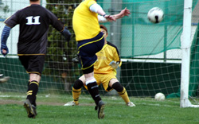
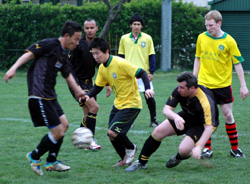
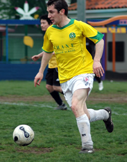
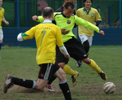

|
YC&AC Sunday 20th April,
For the second time in a month, the fixture list drew together two of the seemingly lower lights of the third division. And, for the second time in a month, the two sides combined to produce a display belying of the lowly league positions of both teams. The rock solid ground at YCAC carried the scars of the previous weekend's sixes shenanigans and the peculiar linings of a midweek baseball caused all sorts of confusion for both sides, as the attempted to play what passed for the sensational silky soccer expected by fans of the TML. And to be fair, both sides showed during the game an eagerness to get the ball down, the divots not really allowing for much by way of dribbling. Not even Christiano Ronaldo, a player recently released by Shane FC, could have made much of that pitch.

But besides that, Shane certainly made the brighter start. A couple of corners in the opening minutes and a spell of controlled pressure saw their opponents on the back foot for the opening twenty or so minutes. Midfield stalwart Peter McGill headed over, the composed Panthers keeper held on to a couple of shots, and wide man (in all senses of the word) James "the Penguin" Bates smashed a thunderous volley off the upright. There was no surprise when Kaji, getting a well deserved rare start in his favoured central midfield berth, curled home a twenty yard strike across the face of the keeper and into the bottom corner. Indeed, the opening five minutes was a portent for what was to come for the rest of the match, by and large.

The second twenty minutes of the first half saw Panthers regroup, lick their wounds so to speak, and come back into the game. Some robust defence and accurate midfield passing saw the team in black keep control of the ball, and eventually fire a few half chances wide or over the bar. Generally though, for all their creative endeavour, the pan-Pacific central defensive partnership of Micah Sadoyama (USA) and Kura (Japan) held everything thrown at them in check. It would prove to be the winning of the game.
Indeed, the solid nature of the Shane defence made it clear that a set piece would be their only likely way back into the game. And indeed in the early minutes of the second half, so it proved. The Panthers, boosted by the return from injury (presumably as a result of doing Sir Sid's running for him) of senior TML honcho (insert name here please Sid) dominated the early possession. A free kick twenty yards from goal saw the Panthers midfielder curl home a superb free kick, giving this correspondent any chance whatsoever. An excellent piece of football fitting of the highest level, such as the Scottish Second division, perhaps.
But as an attacking force, really that was as much as Panthers put together for the majority of the second half.
With the sun breaking through, and the pitch getting even harder underfoot, both teams with unusually large squads, were forced to make use of their substitutes regularly. Shane's substitutes seemed to make the bigger impact on the flow of the game, and chances fell to the team in ghastly yellow. Kevin Ward, brought on to replace the more defensive debutant Murat, volleyed narrowly wide, and McGill, playing in an unaccustomed forward role, missed a headed chance by literally yards following good work from Mani wide on the left.
With ten minutes left, Shane thought they had taken the lead, when Jo Ninoyama, on his return from hamstring trouble out-jumped the keeper to head home, but the referee saw an infringement and ruled the goal out. But less that five minutes after that, Shane did get the goal which would ultimately prove conclusive. Good play from Stephen Mac Guill at right back supplied the ball to Ninoyama just inside the box. Running at the defender, he hit a curling shot past the excellent Panthers keeper to finish the scoring at 2-1.
It was a deserved win for Shane, but on the evidence of Sunday's game, neither of the two teams involved will be sitting at the bottom come the end of the season.
Report by Aiden Wylie
|